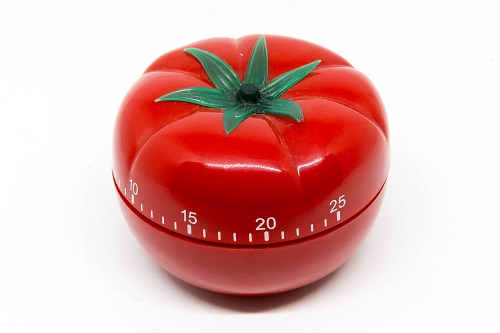

Pomodoro Tekniği, zamanı verimli kullanmak için geliştirilen bir zaman yönetimi tekniğidir. 1980'lerin sonlarında Francesco Cirillo tarafından geliştirilmiştir. Teknik, kısa molalarla birbirinden ayrılan çalışma aralıklarını kullanır. Belirlenen çalışma süresi 25 dakika, kısa mola 5 dakika sürmektedir.
Pomodoro Tekniği, yüksek odak düzeyinde işleri bitirmeye yardımcı olmaktadır. Verilen kısa molalar ile dikkat hep taze tutulur, maksimum odaklanma sağlanır ve daha az zihinsel yorgunluk hissedilir. Bu teknik sayesinde verimli çalışmak ve üretkenliği artırmak mümkündür.
Pomodoro, İtalyanca’da domates manasına gelmektedir ve bu tekniğe adını veren nesne domates şeklindeki bir saattir. Tekniğin geliştiricisi Francesco Cirillo, çalışmasını izlemek için kullandığı domates şeklindeki zamanlayıcıdan ilham alarak, kurguladığı sistemi “Pomodoro” olarak adlandırmıştır. Teknikteki her bir zaman döngüsü de “Pomodoro” şeklinde adlandırılır.
Pomodoro Tekniği’nin uygulaması oldukça basittir. Basit bir saat dışında herhangi bir şey gerektirmez. Kolayca öğrenilir ve uygulanır. Teknikten verim almak için yedi ila yirmi günlük sabit uygulama gerekir. Başladıktan kısa süre sonra zamanı etkin kullanmayı öğretse de gerçek sonuçlar ancak bu zaman aralığında ortaya çıkacaktır. Uygulama süreci oldukça basittir. Gün boyunca her proje için zaman kısa aralıklara bölünür ve periyodik molalar verilir. Her bir çalışma periyodu “Pomodoro” olarak adlandırılır.
Pomodoro Tekniği genellikle yazılımcılar, tasarımcılar, yaratıcı işler yapan kişiler, düzenli olarak üretmek zorunda olanlar, yoğun konsantrasyon gerektiren işlerde çalışanlar tarafından kullanılır. Bu kişiler yaratıcılıklarını ve üretkenliklerini her daim taze tutmak zorundadırlar. Bu teknik verimli çalışma sağladığından dolayı özellikle bu tarz işleri yapan kişilere önerilir. Aslında Pomodoro Tekniği hemen hemen her iş dalına uyarlanabilir. Çünkü bu teknik bireyler için üretkenliği ve zamanı doğru kullanmayı sağlar. Freelancer’lar da bu teknikten yararlanarak zamanlarını planlayabilirler ve evden çalışmanın getirdiği zamanı verimli kullanma konusundaki problemleri giderebilirler.
pomodoroteknigi.com